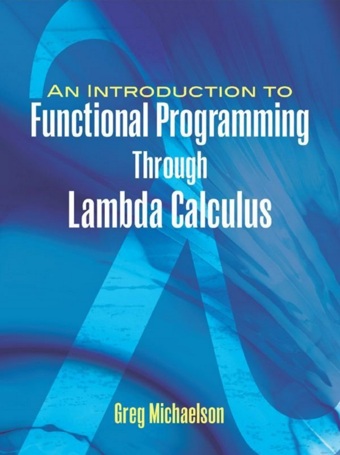
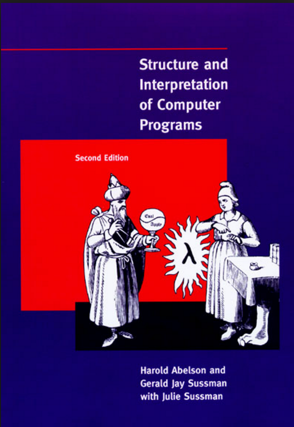
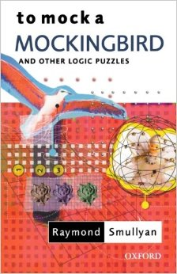
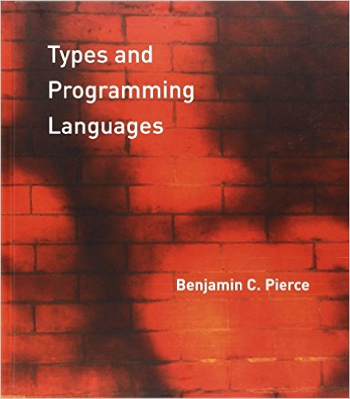
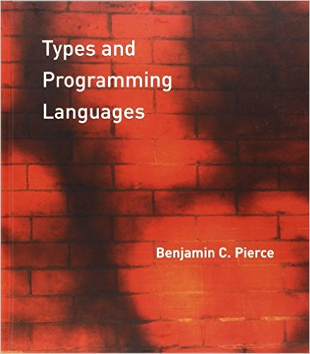

chris@datascience.com
Presenter Notes
$$ $$ The 𝜆 calculus was introduced in the 1930s by Alonzo Church as a way of formalizing the concept of effective computability.
Presenter Notes
The 𝜆 calculus is universal in the sense that any computable function can be e𝑥pressed and evaluated using this formalism. $$ $$ It is the smallest such universal programming language in the world (up to equivalence).
Presenter Notes
In particular the 𝜆 calculus is equivalent to Turing machines. $$ $$ However, it emphasizes the use of transformation rules and does not care about the actual machine implementing them. $$ $$ It is a theory more related to software than to hardware.
Turing machines : C as 𝜆 calculus: Lisp
Presenter Notes
Simplicity & Composibility
The 𝜆 calculus consists of a single transformation rule (variable substitution) and a single function definition scheme: 𝜆𝑥.𝑥
- Exactly one input & one output
- Pure expressions
- Less options = more power
Presenter Notes
Elements of the 𝜆 Calculus
Presenter Notes
The Grammar
The central concept in 𝜆 calculus is the “expression”, defined recursively as follows:
expression := name | function | application
function := 𝜆 name.expression
application := expression expression
$$ $$ The only keywords used in the language are 𝜆 and the dot.
Presenter Notes
Functions consist of two parts: the head and the body. $$ $$ The head of the function is a 𝜆 (lambda) followed by a variable name. $$ $$ The body of the function is another expression.
Presenter Notes
The simplest function is the identity I = 𝜆𝑥.𝑥 $$ $$ The variable named in the head is the parameter and binds all instances of that same variable in the body of the function. $$ $$ That means, when we apply this function to an argument, each 𝑥 in the body of the function will have the value of that argument.
Presenter Notes
$\beta$-reduction
When we apply a function to an argument, we substitute the input expression for all instances of bound variables within the body of the abstraction. $$ $$ You also eliminate the head of the abstraction, since its only purpose was to bind a variable. This process is called $\beta$-reduction .
Presenter Notes
Applications in the lambda calculus are left associative, and expressions can optionally be surrounded with parenthesis for clarity. $$ $$ (𝜆𝑥.𝑥)(𝜆𝑦.𝑦)𝑧 can therfore be rewritten as ((𝜆𝑥.𝑥)(𝜆𝑦.𝑦))𝑧
Presenter Notes
Reducing this gives us:
((𝜆𝑥.𝑥)(𝜆𝑦.𝑦))𝑧
(𝜆𝑦.𝑦)𝑧
𝑧
We go until there are either no lambdas left to apply, or no expressions left to apply them to.
Presenter Notes
Bound and free variables
Sometimes the body expression has variables that are not named in the head. We call those variables free variables. $$ $$ In the expression 𝜆𝑥.𝑥𝑦 the 𝑥 in the body is a bound variable because it is named in the head of the function, while the 𝑦 is a free variable because it is not.
Presenter Notes
When we apply this function to an argument, nothing can be done with the 𝑦. It remains irreducible. $$ $$ That whole abstraction can be applied to an argument, 𝑧, like this: (𝜆𝑥.𝑥𝑦)𝑧.
Presenter Notes
$\alpha$ equivalence
In the expression 𝜆𝑥.𝑥, the variable 𝑥 here is not semantically meaningful except in its role in that single expression. $$ $$ Because of this, there’s a form of equivalence between lambda terms called alpha equivalence.
Presenter Notes
Due to alpha equivalence, you sometimes see expressions in lambda calculus literature such as:
(𝜆𝑥𝑦.𝑥𝑥𝑦)(𝜆𝑥.𝑥𝑦)(𝜆𝑥.𝑥𝑧)
To help make the reduction easier to read we can use different variables in each abstraction.
Presenter Notes
Currying
Each lambda can only bind one parameter and can only accept one argument. Functions that require multiple arguments have multiple, nested heads. $$ $$ This formulation was originally discovered by Moses Schönfinkel in the 1920s but was later rediscovered and named after Haskell Curry.
Presenter Notes
𝜆𝑥𝑦.𝑥𝑦 is a convenient shorthand for the 'curried' form: 𝜆𝑥.(𝜆𝑦.𝑥𝑦) $$ $$ When you apply the first argument, you’re binding 𝑥, eliminating the outer lambda, and have 𝜆𝑦.𝑥𝑦 with 𝑥 being whatever the outer lambda was bound to.
Presenter Notes
E𝑥ample: $\beta$-reduction
(𝜆𝑥𝑦𝑧.𝑥𝑧(𝑦𝑧))(𝜆𝑚𝑛.𝑚)(𝜆𝑝.𝑝)
(𝜆𝑥.𝜆𝑦.𝜆𝑧.𝑥𝑧(𝑦𝑧))(𝜆𝑚.𝜆𝑛.𝑚)(𝜆𝑝.𝑝)
(𝜆𝑦.𝜆𝑧.(𝜆𝑚.𝜆𝑛.𝑚)𝑧(𝑦𝑧))(𝜆𝑝.𝑝)
𝜆𝑧.(𝜆𝑚.𝜆𝑛.𝑚)(𝑧)((𝜆𝑝.𝑝)𝑧)
𝜆𝑧.(𝜆𝑛.𝑧)((𝜆𝑝.𝑝)𝑧)
𝜆𝑧.𝑧
Presenter Notes
$\beta$ normal form
Beta normal form refers to a fully reduced (i.e. all available lambdas are applied to available arguments) $$ $$ This corresponds to a fully evaluated expression, or, in programming, a fully e𝑥ecuted program.
Presenter Notes
Challenge Question
Evaluate (that is, beta reduce) each of the following expressions to normal form.
1) (𝜆𝑧.𝑧)(𝜆𝑧.𝑧𝑧)(𝜆𝑧.𝑧𝑦)
2) (𝜆𝑥.𝜆𝑦.𝑥𝑦𝑦)(𝜆𝑦.𝑦)𝑦
3) (𝜆𝑎.𝑎𝑎)(𝜆𝑏.𝑏𝑎)𝑐
4) (𝜆𝑥𝑦𝑧.𝑥𝑧(𝑦𝑧))(𝜆𝑥.𝑧)(𝜆𝑥.𝑎)
Presenter Notes
Divergence
Not all reducible lambda terms reduce neatly to a beta normal form. $$ $$ Divergence here means that the reduction process never terminates or ends. $$ $$ This matters in programming because terms that diverge won’t produce an answer or meaningful result.
Presenter Notes
Here’s an example of a lambda term called the $\Omega$ combinator: 𝜆𝑥.𝑥𝑥
The $\Omega$ combinator diverges when applied to itself:
(𝜆𝑥.𝑥𝑥)(𝜆𝑥.𝑥𝑥)
(𝜆𝑥.𝑥𝑥)(𝜆𝑥.𝑥𝑥)
(𝜆𝑥.𝑥𝑥)(𝜆𝑥.𝑥𝑥)
...
Presenter Notes
The $\Omega$ combinator is the canonical looping term in the lambda calculus. $$ $$ Static type systems (e.g. Haskell, Scala) will reject this term from being well-formed, so it is a useful tool for compile-time testing.
Presenter Notes
Types, Type Constructors & Combinators
Presenter Notes
Natural Numbers
zero := 𝜆𝑎.𝜆𝑥.𝑥
one := 𝜆𝑎.𝜆𝑥.𝑎𝑥
two := 𝜆𝑎.𝜆𝑥.𝑎𝑎𝑥
succ := 𝜆𝑎.𝜆𝑏.𝜆𝑥.(𝑏(𝑎𝑏𝑥))
Presenter Notes
For example, succ one reduces to:
𝜆𝑎.𝜆𝑏.𝜆𝑥.(𝑏(𝑎𝑏𝑥))(𝜆𝑎.𝜆𝑥.𝑎𝑥)
𝜆𝑎𝑏𝑥.(𝑏(𝑎𝑏𝑥))(𝜆𝑎𝑥.𝑎𝑥)
𝜆𝑏𝑥.𝑏((𝜆𝑎𝑥.𝑎𝑥)𝑏𝑥)
𝜆𝑏𝑥.𝑏𝑏𝑥
𝜆𝑎𝑥.𝑎𝑎𝑥
Presenter Notes
Boolean Algebra
true := 𝜆𝑥𝑦.𝑥
false := 𝜆𝑥𝑦.𝑦
and := 𝜆𝑎𝑏.𝑎𝑏𝑎
or := 𝜆𝑎𝑏.𝑎𝑎𝑏
if := 𝜆𝑎𝑏𝑐.𝑎𝑏𝑐
Presenter Notes
For example, and true false reduces to:
𝜆𝑎𝑏.𝑎𝑏𝑎(𝜆𝑥𝑦.𝑥)(𝜆𝑥𝑦.𝑦)
𝜆𝑥𝑦.𝑥(𝜆𝑥𝑦.𝑦)(𝜆𝑥𝑦.𝑥)
𝜆𝑥𝑦.𝑦
Presenter Notes
if false false true reduces to:
𝜆𝑎𝑏𝑐.𝑎𝑏𝑐(𝜆𝑥𝑦.𝑦)(𝜆𝑥𝑦.𝑦)(𝜆𝑥𝑦.𝑥)
𝜆𝑥𝑦.𝑦(𝜆𝑥𝑦.𝑦)(𝜆𝑥𝑦.𝑥)
𝜆𝑥𝑦.𝑥
Presenter Notes
Tuples and Lists
first := 𝜆𝑎.𝑎(𝜆𝑥𝑦.𝑥)
second := 𝜆𝑎.𝑎(𝜆𝑥𝑦.𝑦)
pair := 𝜆𝑎.𝑎(𝑚𝑛)
note the free variables in pair
Presenter Notes
For example, first(pair(𝑚𝑛)) reduces to:
(𝜆𝑎.𝑎(𝜆𝑥𝑦.𝑥))(𝜆𝑎.𝑎𝑚𝑛)
(𝜆𝑥𝑦.𝑥)𝑚𝑛
𝑚
Presenter Notes
Combinators
A combinator is a lambda term with no free variables. $$ $$ Combinators, as the name suggests, serve only to combine the arguments it is given.
Presenter Notes
Challenge Question:
What do these combinators do?
1) 𝜆𝑥.𝑥
2) 𝜆𝑥𝑦.𝑥
3) 𝜆𝑥𝑦.𝑥𝑦
4) 𝜆𝑥𝑦𝑧.𝑥𝑧𝑦
id, const, apply, flip
Presenter Notes
SKI Combinators
The Starling, Kestrel, and Identity combinators are defined as:
S := 𝜆𝑥𝑦𝑧.𝑥𝑧(𝑦𝑧)
K := 𝜆𝑥𝑦.𝑥
I := 𝜆𝑥.𝑥
Presenter Notes
Remarkably, Schönfinkel also showed that all closed lambda expressions can be expressed in terms of the S, K, and I combinators. $$ $$ All operations in lambda calculus are expressed in the SKI combinator calculus as binary trees whose leaves are one of the three symbols S, K, and I.
Presenter Notes
For example, one can easily show that SKK reduces to I:
(𝜆𝑥𝑦𝑧.𝑥𝑧(𝑦𝑧))(𝜆𝑥𝑦.𝑥)(𝜆𝑥𝑦.𝑥)
(𝜆𝑦𝑧.(𝜆𝑥𝑦.𝑥)𝑧(𝑦𝑧))(𝜆𝑥𝑦.𝑥)
𝜆𝑧.(𝜆𝑥𝑦.𝑥)𝑧((𝜆𝑥𝑦.𝑥)𝑧)
𝜆𝑧.(𝜆𝑦.𝑧)((𝜆𝑥𝑦.𝑥)𝑧)
𝜆𝑧.𝑧
Presenter Notes
However the most famous combinator is probably Curry's Y (Sage bird) combinator: $$ $$
Presenter Notes
Y satisfies a fixed-point combinator equation. Y𝑎 reduces to:
𝜆𝑦.(𝜆𝑥.(𝑦(𝑥𝑥))𝜆𝑥.(𝑦(𝑥𝑥)))𝑎
(𝜆𝑥.(𝑎(𝑥𝑥)))𝜆𝑥.(𝑎(𝑥𝑥))
𝑎(𝜆𝑥.(𝑎(𝑥𝑥))𝜆𝑥.(𝑎(𝑥𝑥)))
𝑎(𝜆𝑦.(𝜆𝑥.(𝑦(𝑥𝑥))𝜆𝑥.(𝑦(𝑥𝑥)))𝑎)
$$ $$ Hence Y𝑎=𝑎(Y𝑎).
Presenter Notes
Applied to a lambda function with one variable the Y combinator usually does not terminate.
For example Y𝜆𝑎.𝑎 reduces to $\Omega$:
𝜆𝑦.(𝜆𝑥.(𝑦(𝑥𝑥))𝜆𝑥.(𝑦(𝑥𝑥)))𝜆𝑎.𝑎
𝜆𝑥.(𝜆𝑎.𝑎(𝑥𝑥))𝜆𝑥.(𝜆𝑎.𝑎(𝑥𝑥))
𝜆𝑥.(𝑥𝑥)𝜆𝑥.(𝑥𝑥)
𝜆𝑥.(𝑥𝑥)𝜆𝑥.(𝑥𝑥)
...
Presenter Notes
More interesting results are obtained by applying the Y combinator to functions of two or more variables. The second variable may be used as a counter, or index. $$ $$ The resulting function behaves like a while or a for loop in an imperative language. $$ $$ Y can be used to allow an expression to contain a reference to itself and reduce on itself permitting recursion and looping logic.
Presenter Notes
Challenge
For fun try and prove that the Y-combinator can be expressed in terms of the S and K combinators:
Presenter Notes
It's easy to think that lambda calculus is not much more than a bizarre, impractical form of abstract math, but it is absolutely foundational to programming. $$ $$ It provides a theoretical basis for functional programming as well as a rich set of simple, practical abstractions. $$ $$ Good abstractions are hard to come by, so the plain but powerful lambda is an indispensable tool to the programmer.
there is often an inverse relationship between simplicity and ease
Presenter Notes
$$ $$ "Computer science is no more about computers than astronomy is about telescopes."
- Edsger Dijkstra
Presenter Notes
Further Reading



 
